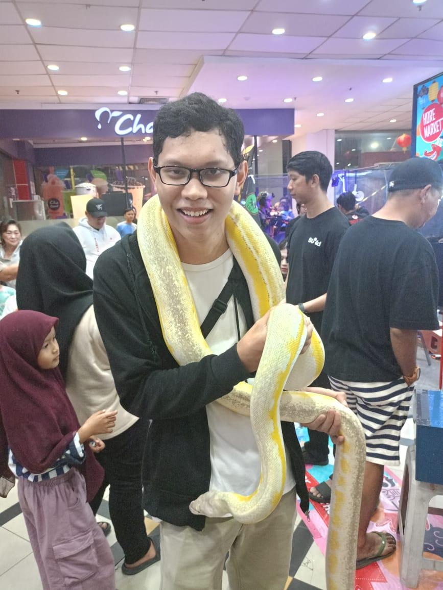
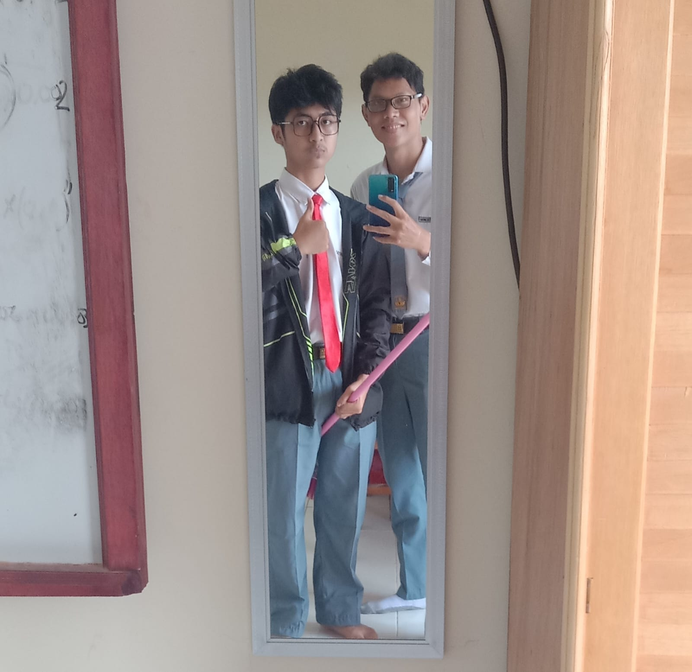
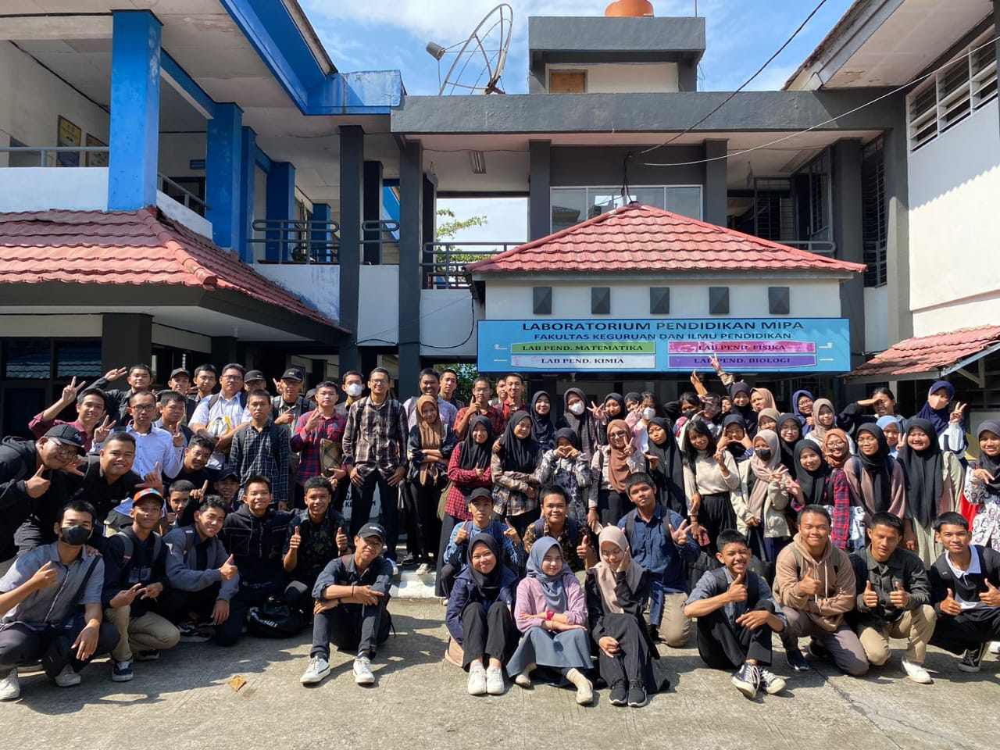
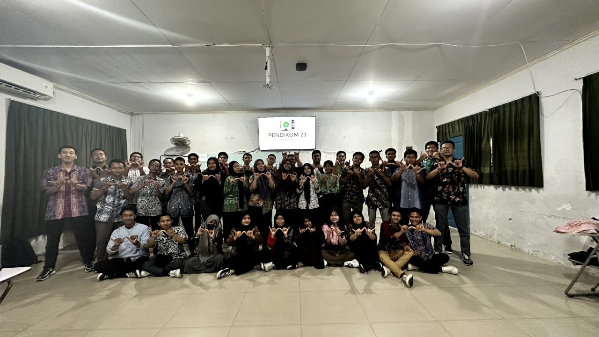

Saya ketika wisuda

Saya megang ular
Ini foto saya ketika kecelakaan
Ini saya ketika mengantar proposal bersama teman saya Raihan
ini saya foto sama begal

Foto ketika gabut di kelas
Ini foto saya ketika perpisahan bersama teman saya
Saya sebelum PKKMB
Di bioskop bersama 2 cindo

Foto setelah praktikum fisika
Foto setelah praktikum biologi

Foto bersama menggunakan batik